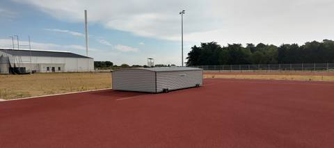
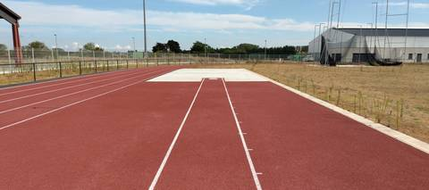
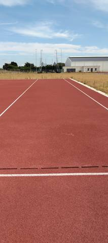
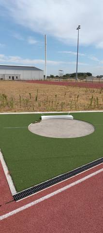
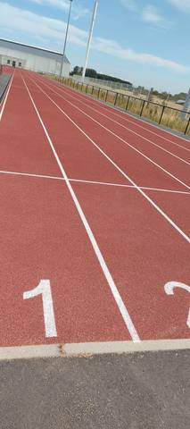
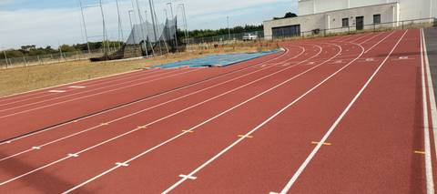
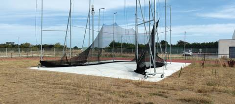

{kind=link}
{kind=link}
{kind=link}
{kind=link}
{kind=link}
{kind=link}
{kind=link}
Piste flambant neuve, revêtement tartan impeccable sur l'anneau à 4 couloirs et sa ligne droite d'arrivée élargie à 6 couloirs pour le 100 m. Les aires de lancer (poids, disque, marteau, javelot) et la fosse de saut en longueur/triple saut sont déjà en place et utilisables. Seuls bémols : le sautoir à la perche n'est pas encore équipé, les poteaux étant commandés et en attente de livraison par la mairie, et le sautoir en hauteur est présent mais son tapis de réception reste stocké dans son abri, donc pas prêt à l'usage immédiat. Accès libre le jour de la visite, sanitaires à proximité immédiate.
Complexe sportif Mickaël Landreau (Arthon-en-Retz)
Rue du Stade, 44320 Chaumes-en-Retz · Loire-Atlantique
Complexe sportif Mickaël Landreau (Arthon-en-Retz) is an athletics venue in Chaumes-en-Retz (Loire-Atlantique), Pays de la Loire, France. It has an synthetic (tartan) running track with 4 lanes. It also offers long jump pit, triple jump, high jump area, shot put, discus, hammer throw and javelin. The venue provides floodlighting. Access is free and unrestricted.
Photos







A photo is surely still missing
Jump pits and throwing areas are what public data describes worst, and what gets photographed least. A close-up of the ground, a covered vault pit, a sand box gone to weeds: each adds what no field carries.
Send a photoNo GitHub account?Track
- Surface
- Synthetic (tartan)
- Lap length
- 250 m — estimated from OpenStreetMap, not measured on site
- Lanes
- 4
- Setting
- Outdoor
Recorded facilities
- Long jump pit
- Triple jump
- High jump area
- Shot put
- Discus
- Hammer throw
- Javelin
Access & amenities
- Free access
- Yes
- Floodlighting
- Yes
Sanitaires visibles juste à côté de la piste ; leur ouverture n'a pas été vérifiée le jour de la visite.
Athlete reviews
Visite sur place le 22 août 2026. Anneau tout neuf en tartan (revêtement synthétique confirmé au sol, impeccable, aucune fissure ni marquage effacé constaté), à 4 couloirs, avec une ligne droite d'arrivée élargie à 6 couloirs pour le 100 m. Longueur de l'anneau donnée à 250 m par une élue de la commune sur place : non mesurée au décamètre, donc en longueur_probable plutôt qu'en longueur_piste. Ce chiffre remplace l'estimation géométrique précédente (360 m, déduite d'OpenStreetMap et de l'orthophoto IGN) ; les deux sources restent des estimations et l'écart n'est pas expliqué — à vérifier par une mesure directe lors d'une prochaine visite. Portail ouvert, entrée libre le jour de la visite. Site indépendant du collège Joséphine-Baker voisin (pas d'enceinte scolaire partagée). Mâts d'éclairage neufs en place autour de l'anneau. Agrès constatés : fosse de saut en longueur et triple saut, cercle de lancer du poids (gazon synthétique), cage de lancer du disque et du marteau (filets en place), couloir d'élan du javelot. Sautoir en hauteur présent mais son tapis de réception est stocké dans un abri en aluminium sur roulettes (marque DIMA), donc pas déployé ni utilisable en l'état. Sautoir à la perche non équipé : les poteaux sont commandés et en attente de livraison par la mairie, d'après une élue rencontrée sur place — l'agrès n'est donc pas listé comme présent. Les deux noms coexistent sur place, constaté le 22 août 2026 : « Stade des Chaumes » désigne l'ensemble du complexe (déclaré au Recensement des Équipements Sportifs sous I440050001, avec gymnase et tribune de 556 places), « complexe sportif Mickaël Landreau » désigne plus précisément cette installation.
Other venues in the department
- Stade Municipal des Chataigniers
- Terrain des Loisirs
- Complexe sportif Joséphine Baker (Le Clion-sur-Mer)
- Complexe Sportif Gauvrit
- Piste du Domaine du Collet (Les Moutiers-en-Retz)
- Centre Sportif du Val Saint Martin
Report an error or complete this record
Réf. c-mickael-landreau-arthon-en-retz · Source: Community contribution — Data ES, French ministry for sport, Licence Ouverte 2.0. Records are self-declared and may be incomplete: check access conditions before travelling.